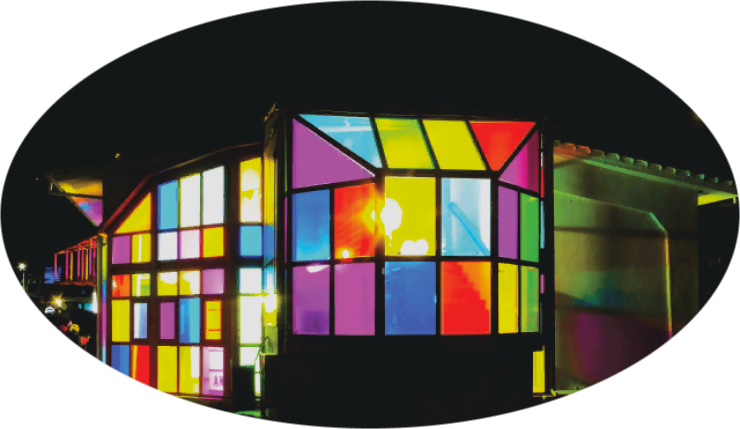
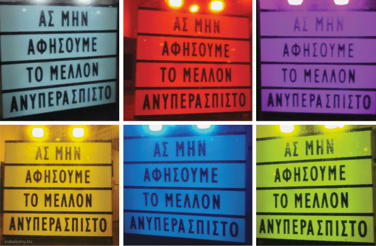

Από Ευτυχία Μαλιαρού
Στο πλαίσιο του 61 Φεστιβάλ Κινηματογράφου Θεσσαλονίκης δημιουργήθηκε η εγκατάσταση (installation) «The Glasshouse Project», η οποία συνεχίζει να μας κρατάει συντροφιά τις μέρες του εγκλεισμού.
Το κτήριο της προβλήτας Α, απαρτίζεται από τετράπλευρα τζάμια που φεγγοβολούν. Οι πολύχρωμες αχτίδες φωτός που διαχέονται τριγύρω προκαλούν τους περαστικούς να ανακαλύψουν τι συμβαίνει.
Το πρώτο πράγμα που αντικρίζει κάποιος είναι το γυαλί που κυριαρχεί – κόκκινα, πορτοκαλί, κίτρινα, πράσινα, γαλάζια, μπλε και μωβ χρώματα ξεπροβάλλουν.
Προβολείς εκπέμπουν φως από το εσωτερικό σε διάφορα σημεία του ορίζοντα.
Στη Θεσσαλονίκη βρίσκεται το μοναδικό μουσείο της χώρας μας, μέσα στο οποίο μπορούμε να γνωρίσουμε την ιστορία της φαρμακευτικής και τον τρόπο με τον οποίο λειτουργούσαν τα φαρμακεία στην Ελλάδα.
Το σχήμα του κτηρίου κάνει την σύνθεση ακόμα πιο ενδιαφέρουσα. Το project είναι ορατό από 3 πλευρές.
Με μια πιο προσεκτική ματιά γίνεται αντιληπτή – πίσω από τις σφραγισμένες θήρες – η φράση «Ας μην αφήσουμε το μέλλον ανυπεράσπιστο».
Λόγια που καθένας από μας εκλαμβάνει αλλιώς, μια αλήθεια που επιβεβαιώνεται κοιτάζοντας με διαφορετική ματιά – από άλλη οπτική γωνία. Ο όρος Installation art αφορά έργα που αλληλοεπιδρούν με τον θεατή και σαν στόχο έχουν να του προσφέρουν μια έντονη εμπειρία μέσα από την αλήθεια του.
Η ανάγκη του καλλιτέχνη Νίκου Ράκκα για την εγκατάσταση γεννήθηκε τις μέρες του εγκλεισμού.
Καθώς παρατηρούσα το έργο, δίπλα μου στεκόταν ένα μικρό κορίτσι με την αδερφή και τον πατέρα της.
Πλησιάζοντας διάβασαν την παραπάνω φράση και τότε το κορίτσι ρώτησε «Γιατί εδώ; Δεν καταλαβαίνω». Έτσι άρχισε ένας διάλογος…
Η τέχνη ενθαρρύνει την κριτική σκέψη.
Όλη η ομορφιά της βρίσκεται στην μοναδικότητα του έργου να επιδέχεται διαφορετικές ερμηνείες, έτσι φέρνει τους ανθρώπους πιο κοντά, κάτι που έχουμε στερηθεί τελευταία, όμως δεν παύουμε να έχουμε ανάγκη.
Το έργο, μεταξύ άλλων, φέρει τα αισιόδοξα μηνύματα της πολυμορφίας και της ενότητας. Έχει σταθεί επάξια δίπλα μας όλες αυτές τις μουντές μέρες.
Τα χρώματα μοιράζουν χαμόγελα και το φως σημαίνει ελπίδα. Ένας φάρος, που γίνεται η αφορμή για τους ανθρώπους να ανακαλύψουν την αλήθεια τους, δεν θα ταίριαζε καλύτερα σε άλλο σημείο της πόλης.
Πολύ ενδιαφέρουσα προσέγγιση! Περνάω κάθε μέρα μπροστά από αυτό το κτίριο και δεν είχα ιδέα τι κρύβεται από πίσω.
ΔΗΜΗΤΡΗΣ
Το αγαπώ, δε θέλω να σταματήσω να το κοιτάζω! Επιτέλους κάτι όμορφο, βαρεθήκαμε να βλέπουμε κουτιά με εσοχές!
ΕΛΠΙΔΑ

Post Views: 377
ΑφΗστε Ενα ΣχΟλιο
Η ηλ. διεύθυνση σας δεν δημοσιεύεται. Τα υποχρεωτικά πεδία σημειώνονται με *